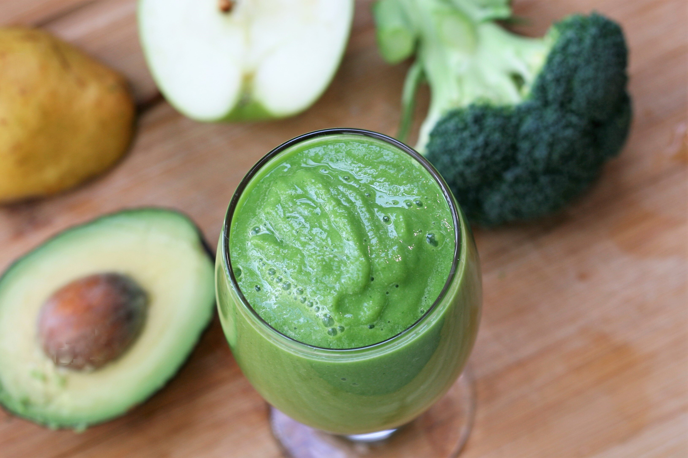

Green Detox Smoothie

Super-easy and very healthy. Don't be put off by the color, this actually tastes pretty good and is great for digestion. I use coconut water instead of pineapple juice if I want to reduce the sugar and make the smoothie even healthier.
Ingredients:
- 3/4 cup pineapple juice
- 1/2 cup fresh spinach leaves
- 1/4 pear, chopped
- 1/4 green apple, chopped
- 1/4 avocado, chopped
- 3 brocolli florets
Steps:
- Blend pineapple juice, spinach, pear, apple, avocado, and broccoli florets together in a blender until smooth.